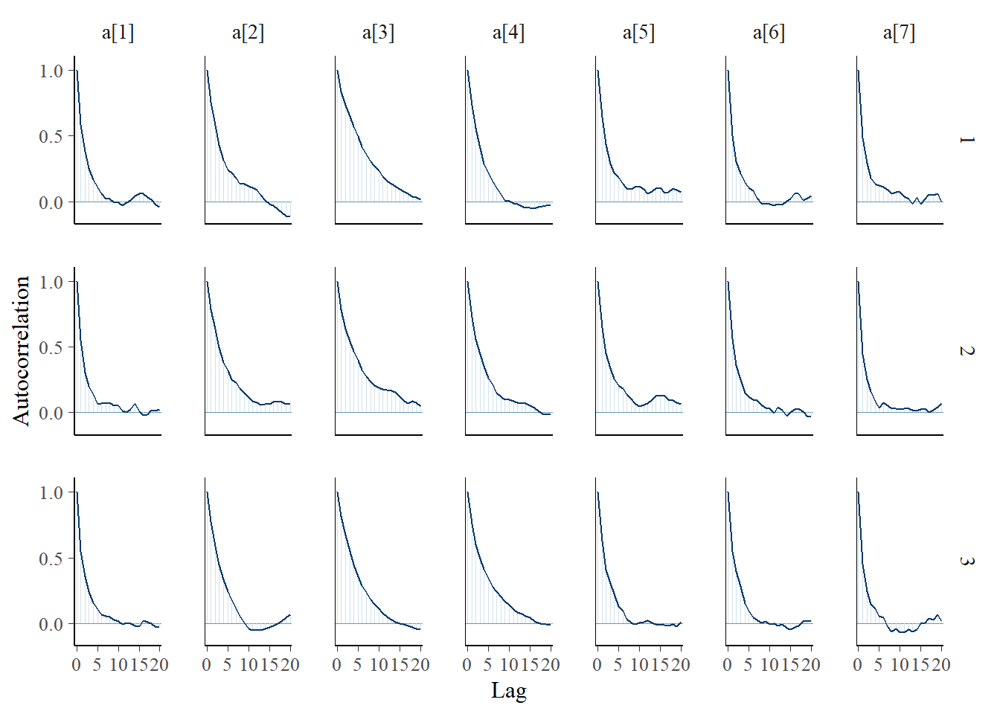
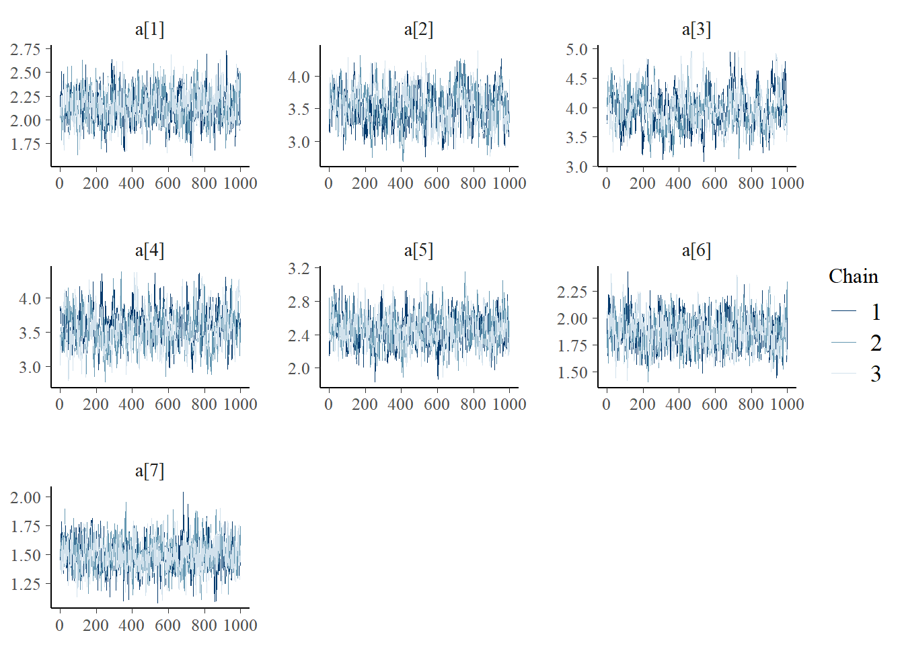
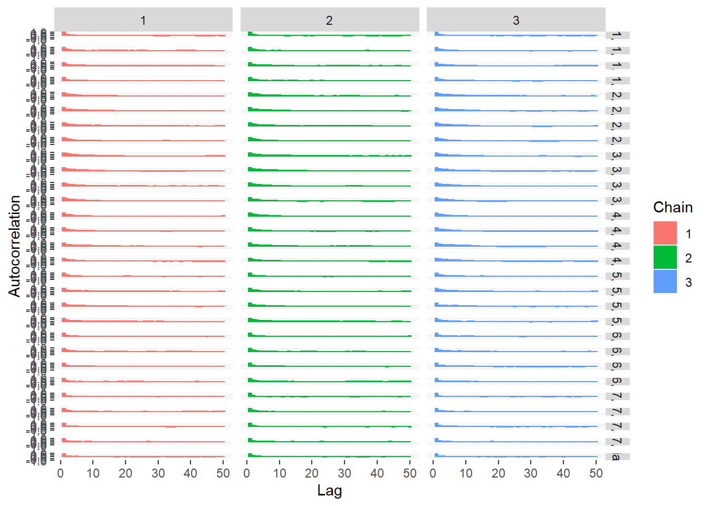

11.7 PI Example - JAGS
In the below implementation, I had to change d[j,3] ~ dnorm(1, .5)I(d[j,4],d[j,2]) to d[j,3] ~ dnorm(1, .5);I(,d[j,2]) because (1) R is dumb and doesn’t realize that I is a JAGS function; and (2) JAGS does not allow for a directed cycle.
The directed cycle in the DAG is when the range of values for d[j,3] is fixed to be within I(d[j,4],d[j,2]) and is not permissible. We need to simply constrain the thresholds to be decreasing or smaller than the previous threshold.
I’m not sure of the underlying technical reason for this error, but I found that adding the semi-colon fixes the issue when defining the model as an R function.
jags.model.peer.int <- function(){
#######################################
# Specify the item response measurement model for the observables
#######################################
for (i in 1:n){
for(j in 1:J){
###################################
# Specify the probabilities of a value being greater than or equal to each category
###################################
for(k in 2:(K[j])){
# P(greater than or equal to category k > 1)
logit(P.gte[i,j,k]) <- a[j]*theta[i]+d[j,k]
}
# P(greater than or equal to category 1)
P.gte[i,j,1] <- 1
###################################
# Specify the probabilities of a value being equal to each category
###################################
for(k in 1:(K[j]-1)){
# P(greater equal to category k < K)
P[i,j,k] <- P.gte[i,j,k]-P.gte[i,j,k+1]
}
# P(greater equal to category K)
P[i,j,K[j]] <- P.gte[i,j,K[j]]
###################################
# Specify the distribution for each observable
###################################
x[i,j] ~ dcat(P[i,j,1:K[j]])
}
}
#######################################
# Specify the (prior) distribution for the latent variables
#######################################
for (i in 1:n){
theta[i] ~ dnorm(0, 1) # distribution for the latent variables
}
#######################################
# Specify the prior distribution for the measurement model parameters
#######################################
for(j in 1:J){
d[j,2] ~ dnorm(2, .5) # Locations for k = 2
d[j,3] ~ dnorm(1, .5);I(,d[j,2]) # Locations for k = 3
d[j,4] ~ dnorm(-1, .5);I(,d[j,3]) # Locations for k = 4
d[j,5] ~ dnorm(-2, .5);I(,d[j,4]) # Locations for k = 5
a[j] ~ dnorm(1, .5); I(0,) # Discriminations for observables
}
} # closes the model
# initial values
start_values <- list(
list(
d= matrix(c(NA, 3.00E+00, 1.00E+00, 0.00E+00, -1.00E+00,
NA, 3.00E+00, 1.00E+00, 0.00E+00, -1.00E+00,
NA, 3.00E+00, 1.00E+00, 0.00E+00, -1.00E+00,
NA, 3.00E+00, 1.00E+00, 0.00E+00, -1.00E+00,
NA, 3.00E+00, 1.00E+00, 0.00E+00, -1.00E+00,
NA, 3.00E+00, 1.00E+00, 0.00E+00, -1.00E+00,
NA, 3.00E+00, 1.00E+00, 0.00E+00, -1.00E+00),
ncol=5, nrow=7, byrow=T),
a=c(1.00E-01, 1.00E-01, 1.00E-01, 1.00E-01, 1.00E-01, 1.00E-01, 1.00E-01)),
list(
d= matrix(c(NA, 2.00E+00, 0.00E+00, -1.00E+00, -2.00E+00,
NA, 2.00E+00, 0.00E+00, -1.00E+00, -2.00E+00,
NA, 2.00E+00, 0.00E+00, -1.00E+00, -2.00E+00,
NA, 2.00E+00, 0.00E+00, -1.00E+00, -2.00E+00,
NA, 2.00E+00, 0.00E+00, -1.00E+00, -2.00E+00,
NA, 2.00E+00, 0.00E+00, -1.00E+00, -2.00E+00,
NA, 2.00E+00, 0.00E+00, -1.00E+00, -2.00E+00),
ncol=5, nrow=7, byrow=T),
a=c(3.00E+00, 3.00E+00, 3.00E+00, 3.00E+00, 3.00E+00, 3.00E+00, 3.00E+00)),
list(
d= matrix(c(NA, 1.00E+00, -1.00E+00, -2.00E+00, -3.00E+00,
NA, 1.00E+00, -1.00E+00, -2.00E+00, -3.00E+00,
NA, 1.00E+00, -1.00E+00, -2.00E+00, -3.00E+00,
NA, 1.00E+00, -1.00E+00, -2.00E+00, -3.00E+00,
NA, 1.00E+00, -1.00E+00, -2.00E+00, -3.00E+00,
NA, 1.00E+00, -1.00E+00, -2.00E+00, -3.00E+00,
NA, 1.00E+00, -1.00E+00, -2.00E+00, -3.00E+00),
ncol=5, nrow=7, byrow=T),
a=c(1.00E+00, 1.00E+00, 1.00E+00, 1.00E+00, 1.00E+00, 1.00E+00, 1.00E+00))
)
# vector of all parameters to save
param_save <- c("a", "d", "theta")
# dataset
dat <- read.table("data/PI.dat", header=T)
mydata <- list(
n = nrow(dat), J = ncol(dat),
K = rep(5, ncol(dat)),
x = as.matrix(dat)
)
# fit model
fit <- jags(
model.file=jags.model.peer.int,
data=mydata,
inits=start_values,
parameters.to.save = param_save,
n.iter=2000,
n.burnin = 1000,
n.chains = 3)## Compiling model graph
## Resolving undeclared variables
## Allocating nodes
## Graph information:
## Observed stochastic nodes: 3500
## Unobserved stochastic nodes: 535
## Total graph size: 53050
##
## Initializing model
##
##
|
| | 0%
|
|++ | 4%
|
|++++ | 8%
|
|++++++ | 12%
|
|++++++++ | 16%
|
|++++++++++ | 20%
|
|++++++++++++ | 24%
|
|++++++++++++++ | 28%
|
|++++++++++++++++ | 32%
|
|++++++++++++++++++ | 36%
|
|++++++++++++++++++++ | 40%
|
|++++++++++++++++++++++ | 44%
|
|++++++++++++++++++++++++ | 48%
|
|++++++++++++++++++++++++++ | 52%
|
|++++++++++++++++++++++++++++ | 56%
|
|++++++++++++++++++++++++++++++ | 60%
|
|++++++++++++++++++++++++++++++++ | 64%
|
|++++++++++++++++++++++++++++++++++ | 68%
|
|++++++++++++++++++++++++++++++++++++ | 72%
|
|++++++++++++++++++++++++++++++++++++++ | 76%
|
|++++++++++++++++++++++++++++++++++++++++ | 80%
|
|++++++++++++++++++++++++++++++++++++++++++ | 84%
|
|++++++++++++++++++++++++++++++++++++++++++++ | 88%
|
|++++++++++++++++++++++++++++++++++++++++++++++ | 92%
|
|++++++++++++++++++++++++++++++++++++++++++++++++ | 96%
|
|++++++++++++++++++++++++++++++++++++++++++++++++++| 100%
##
|
| | 0%
|
|** | 4%
|
|**** | 8%
|
|****** | 12%
|
|******** | 16%
|
|********** | 20%
|
|************ | 24%
|
|************** | 28%
|
|**************** | 32%
|
|****************** | 36%
|
|******************** | 40%
|
|********************** | 44%
|
|************************ | 48%
|
|************************** | 52%
|
|**************************** | 56%
|
|****************************** | 60%
|
|******************************** | 64%
|
|********************************** | 68%
|
|************************************ | 72%
|
|************************************** | 76%
|
|**************************************** | 80%
|
|****************************************** | 84%
|
|******************************************** | 88%
|
|********************************************** | 92%
|
|************************************************ | 96%
|
|**************************************************| 100%print(fit)## Inference for Bugs model at "C:/Users/noahp/AppData/Local/Temp/RtmpW4ITDP/modelcd06e8c1a5d.txt", fit using jags,
## 3 chains, each with 2000 iterations (first 1000 discarded)
## n.sims = 3000 iterations saved
## mu.vect sd.vect 2.5% 25% 50% 75% 97.5% Rhat n.eff
## a[1] 2.145 0.160 1.827 2.033 2.149 2.257 2.445 1.007 340
## a[2] 3.520 0.265 3.029 3.339 3.515 3.699 4.078 1.018 120
## a[3] 4.042 0.292 3.483 3.845 4.044 4.230 4.664 1.013 160
## a[4] 3.595 0.259 3.118 3.416 3.589 3.761 4.130 1.021 100
## a[5] 2.464 0.174 2.122 2.347 2.468 2.577 2.807 1.022 95
## a[6] 1.877 0.144 1.612 1.780 1.873 1.972 2.161 1.001 3000
## a[7] 1.506 0.128 1.261 1.420 1.509 1.590 1.752 1.001 2100
## d[1,2] 4.954 0.332 4.324 4.735 4.943 5.171 5.639 1.010 870
## d[2,2] 5.201 0.379 4.512 4.935 5.179 5.445 5.993 1.002 3000
## d[3,2] 6.638 0.457 5.809 6.318 6.631 6.948 7.551 1.002 1400
## d[4,2] 6.422 0.445 5.575 6.122 6.413 6.712 7.306 1.002 1000
## d[5,2] 4.810 0.307 4.219 4.598 4.808 5.003 5.423 1.006 410
## d[6,2] 3.856 0.253 3.379 3.680 3.853 4.021 4.367 1.026 82
## d[7,2] 4.306 0.301 3.757 4.096 4.297 4.503 4.941 1.001 3000
## d[1,3] 2.962 0.212 2.556 2.820 2.957 3.104 3.382 1.007 520
## d[2,3] 1.207 0.210 0.793 1.065 1.205 1.347 1.627 1.015 180
## d[3,3] 3.419 0.286 2.865 3.226 3.417 3.615 3.993 1.010 280
## d[4,3] 2.742 0.250 2.241 2.572 2.742 2.907 3.227 1.003 760
## d[5,3] 2.707 0.199 2.330 2.570 2.703 2.838 3.107 1.009 250
## d[6,3] 1.974 0.164 1.666 1.861 1.970 2.080 2.307 1.024 87
## d[7,3] 2.465 0.174 2.127 2.349 2.463 2.582 2.810 1.003 910
## d[1,4] 0.662 0.142 0.391 0.566 0.658 0.756 0.941 1.009 240
## d[2,4] -1.741 0.219 -2.199 -1.879 -1.730 -1.591 -1.341 1.034 71
## d[3,4] -1.297 0.234 -1.760 -1.455 -1.287 -1.133 -0.865 1.025 89
## d[4,4] -0.769 0.198 -1.157 -0.904 -0.766 -0.633 -0.396 1.028 78
## d[5,4] -0.329 0.155 -0.630 -0.436 -0.329 -0.220 -0.039 1.017 130
## d[6,4] -0.479 0.131 -0.733 -0.568 -0.479 -0.387 -0.230 1.024 89
## d[7,4] 0.280 0.121 0.039 0.199 0.282 0.363 0.514 1.006 350
## d[1,5] -2.496 0.189 -2.896 -2.620 -2.487 -2.365 -2.154 1.007 330
## d[2,5] -5.093 0.371 -5.861 -5.343 -5.084 -4.836 -4.383 1.026 82
## d[3,5] -5.614 0.408 -6.459 -5.875 -5.596 -5.328 -4.865 1.016 140
## d[4,5] -4.831 0.342 -5.546 -5.060 -4.806 -4.602 -4.191 1.023 100
## d[5,5] -3.591 0.243 -4.091 -3.754 -3.590 -3.431 -3.127 1.018 120
## d[6,5] -3.216 0.211 -3.644 -3.358 -3.214 -3.076 -2.820 1.004 510
## d[7,5] -2.738 0.187 -3.113 -2.863 -2.729 -2.608 -2.383 1.003 810
## theta[1] 0.841 0.280 0.274 0.648 0.839 1.038 1.368 1.003 980
## theta[2] -0.985 0.254 -1.484 -1.157 -0.982 -0.811 -0.496 1.004 650
## theta[3] -1.040 0.248 -1.520 -1.206 -1.036 -0.872 -0.547 1.003 740
## theta[4] -0.259 0.259 -0.778 -0.426 -0.259 -0.088 0.251 1.002 1400
## theta[5] 0.118 0.262 -0.416 -0.046 0.123 0.285 0.618 1.005 430
## theta[6] 0.092 0.255 -0.409 -0.077 0.103 0.259 0.595 1.003 740
## theta[7] 1.452 0.318 0.864 1.234 1.448 1.650 2.124 1.006 600
## theta[8] 0.771 0.265 0.250 0.586 0.777 0.952 1.274 1.001 2200
## theta[9] -0.017 0.250 -0.505 -0.183 -0.017 0.150 0.485 1.001 2000
## theta[10] 0.360 0.270 -0.163 0.183 0.358 0.534 0.908 1.005 500
## theta[11] -0.770 0.256 -1.259 -0.949 -0.772 -0.602 -0.253 1.003 880
## theta[12] -0.211 0.257 -0.745 -0.378 -0.210 -0.037 0.285 1.003 980
## theta[13] 1.040 0.260 0.519 0.868 1.039 1.215 1.549 1.007 290
## theta[14] -0.014 0.253 -0.529 -0.174 -0.006 0.156 0.461 1.001 3000
## theta[15] -0.686 0.245 -1.164 -0.851 -0.684 -0.523 -0.208 1.002 2000
## theta[16] -0.453 0.286 -1.016 -0.646 -0.453 -0.259 0.116 1.001 3000
## theta[17] 2.361 0.479 1.540 2.024 2.302 2.648 3.410 1.004 570
## theta[18] 0.239 0.258 -0.239 0.061 0.233 0.412 0.775 1.005 430
## theta[19] 0.035 0.261 -0.457 -0.142 0.031 0.209 0.546 1.002 3000
## theta[20] 0.236 0.262 -0.277 0.061 0.231 0.412 0.756 1.001 2100
## theta[21] 0.359 0.249 -0.128 0.197 0.361 0.522 0.835 1.003 890
## theta[22] -1.023 0.263 -1.556 -1.192 -1.013 -0.848 -0.508 1.001 3000
## theta[23] 0.681 0.264 0.178 0.504 0.680 0.859 1.192 1.007 330
## theta[24] 0.066 0.266 -0.465 -0.111 0.071 0.251 0.571 1.002 1800
## theta[25] 2.355 0.485 1.536 2.007 2.310 2.651 3.431 1.001 2200
## theta[26] 0.546 0.296 -0.020 0.340 0.538 0.737 1.145 1.004 540
## theta[27] -0.762 0.258 -1.258 -0.944 -0.761 -0.591 -0.253 1.003 780
## theta[28] 0.195 0.252 -0.311 0.034 0.197 0.369 0.682 1.003 830
## theta[29] 1.062 0.290 0.493 0.868 1.059 1.255 1.641 1.001 2000
## theta[30] 0.372 0.243 -0.091 0.207 0.369 0.530 0.852 1.003 1400
## theta[31] 0.475 0.255 -0.006 0.295 0.469 0.652 0.975 1.004 610
## theta[32] 0.415 0.266 -0.102 0.240 0.414 0.591 0.938 1.003 860
## theta[33] 0.427 0.263 -0.106 0.252 0.429 0.601 0.947 1.001 3000
## theta[34] 0.133 0.247 -0.358 -0.035 0.136 0.294 0.613 1.006 430
## theta[35] -1.314 0.260 -1.820 -1.491 -1.317 -1.138 -0.811 1.010 210
## theta[36] 0.774 0.243 0.292 0.607 0.769 0.938 1.265 1.005 460
## theta[37] -0.535 0.264 -1.053 -0.713 -0.535 -0.357 -0.029 1.002 2000
## theta[38] -0.732 0.251 -1.222 -0.904 -0.737 -0.562 -0.231 1.003 680
## theta[39] -0.466 0.311 -1.076 -0.677 -0.457 -0.258 0.159 1.002 1500
## theta[40] -0.148 0.257 -0.654 -0.320 -0.148 0.025 0.364 1.003 1300
## theta[41] 0.215 0.288 -0.335 0.024 0.209 0.398 0.799 1.002 1300
## theta[42] -2.234 0.353 -2.983 -2.465 -2.219 -1.985 -1.600 1.003 1000
## theta[43] 2.068 0.404 1.384 1.792 2.019 2.292 3.018 1.002 1700
## theta[44] -0.409 0.290 -0.974 -0.610 -0.409 -0.214 0.142 1.003 820
## theta[45] 2.349 0.470 1.567 2.001 2.304 2.638 3.406 1.003 990
## theta[46] 0.782 0.257 0.282 0.606 0.786 0.958 1.276 1.001 3000
## theta[47] -0.859 0.265 -1.377 -1.038 -0.859 -0.676 -0.333 1.012 170
## theta[48] -0.181 0.262 -0.714 -0.350 -0.181 -0.010 0.326 1.004 680
## theta[49] 0.166 0.264 -0.366 -0.004 0.162 0.334 0.704 1.002 3000
## theta[50] -0.582 0.285 -1.132 -0.775 -0.583 -0.394 -0.021 1.005 740
## theta[51] -0.377 0.250 -0.867 -0.545 -0.376 -0.211 0.129 1.003 920
## theta[52] -1.019 0.250 -1.516 -1.186 -1.019 -0.858 -0.529 1.003 880
## theta[53] 0.428 0.264 -0.096 0.260 0.428 0.603 0.961 1.002 1500
## theta[54] 0.365 0.275 -0.193 0.188 0.361 0.549 0.905 1.001 3000
## theta[55] -0.831 0.267 -1.362 -1.004 -0.831 -0.647 -0.321 1.002 1900
## theta[56] 0.784 0.253 0.297 0.616 0.780 0.958 1.278 1.001 3000
## theta[57] 1.396 0.262 0.882 1.219 1.396 1.564 1.944 1.001 3000
## theta[58] -0.840 0.255 -1.337 -1.011 -0.836 -0.670 -0.342 1.001 3000
## theta[59] 0.094 0.256 -0.415 -0.079 0.098 0.270 0.584 1.002 3000
## theta[60] 0.343 0.267 -0.167 0.161 0.346 0.517 0.861 1.006 1100
## theta[61] -1.794 0.313 -2.423 -1.995 -1.781 -1.582 -1.206 1.002 1200
## theta[62] -0.422 0.254 -0.936 -0.592 -0.419 -0.262 0.083 1.002 1900
## theta[63] 2.342 0.476 1.537 2.000 2.304 2.644 3.424 1.002 1300
## theta[64] -0.920 0.252 -1.421 -1.083 -0.924 -0.757 -0.423 1.002 1100
## theta[65] 0.369 0.274 -0.159 0.184 0.364 0.547 0.914 1.003 1200
## theta[66] 0.779 0.264 0.268 0.602 0.783 0.958 1.309 1.001 2800
## theta[67] 0.339 0.251 -0.157 0.171 0.342 0.508 0.827 1.001 3000
## theta[68] 1.601 0.293 1.060 1.404 1.582 1.793 2.221 1.002 1100
## theta[69] 1.093 0.261 0.575 0.919 1.096 1.273 1.590 1.002 1400
## theta[70] 1.596 0.291 1.040 1.403 1.587 1.781 2.178 1.002 1400
## theta[71] -0.016 0.246 -0.489 -0.185 -0.015 0.148 0.469 1.004 530
## theta[72] -1.027 0.257 -1.526 -1.199 -1.023 -0.853 -0.527 1.002 1500
## theta[73] 0.145 0.268 -0.374 -0.035 0.149 0.320 0.681 1.004 660
## theta[74] -2.301 0.392 -3.175 -2.544 -2.276 -2.020 -1.612 1.002 1800
## theta[75] -0.131 0.279 -0.683 -0.313 -0.128 0.049 0.415 1.004 960
## theta[76] -1.106 0.238 -1.556 -1.269 -1.113 -0.942 -0.639 1.007 310
## [ reached getOption("max.print") -- omitted 425 rows ]
##
## For each parameter, n.eff is a crude measure of effective sample size,
## and Rhat is the potential scale reduction factor (at convergence, Rhat=1).
##
## DIC info (using the rule, pD = var(deviance)/2)
## pD = 699.0 and DIC = 7012.0
## DIC is an estimate of expected predictive error (lower deviance is better).round(fit$BUGSoutput$summary[ !rownames(fit$BUGSoutput$summary) %like% "theta", ], 3)## mean sd 2.5% 25% 50% 75% 97.5% Rhat n.eff
## a[1] 2.145 0.160 1.827 2.033 2.149 2.257 2.445 1.007 340
## a[2] 3.520 0.265 3.029 3.339 3.515 3.699 4.078 1.018 120
## a[3] 4.042 0.292 3.483 3.845 4.044 4.230 4.664 1.013 160
## a[4] 3.595 0.259 3.118 3.416 3.589 3.761 4.130 1.021 100
## a[5] 2.464 0.174 2.122 2.347 2.468 2.577 2.807 1.022 95
## a[6] 1.877 0.144 1.612 1.780 1.873 1.972 2.161 1.001 3000
## a[7] 1.506 0.128 1.261 1.420 1.509 1.590 1.752 1.001 2100
## d[1,2] 4.954 0.332 4.324 4.735 4.943 5.171 5.639 1.010 870
## d[2,2] 5.201 0.379 4.512 4.935 5.179 5.445 5.993 1.002 3000
## d[3,2] 6.638 0.457 5.809 6.318 6.631 6.948 7.551 1.002 1400
## d[4,2] 6.422 0.445 5.575 6.122 6.413 6.712 7.306 1.002 1000
## d[5,2] 4.810 0.307 4.219 4.598 4.808 5.003 5.423 1.006 410
## d[6,2] 3.856 0.253 3.379 3.680 3.853 4.021 4.367 1.026 82
## d[7,2] 4.306 0.301 3.757 4.096 4.297 4.503 4.941 1.001 3000
## d[1,3] 2.962 0.212 2.556 2.820 2.957 3.104 3.382 1.007 520
## d[2,3] 1.207 0.210 0.793 1.065 1.205 1.347 1.627 1.015 180
## d[3,3] 3.419 0.286 2.865 3.226 3.417 3.615 3.993 1.010 280
## d[4,3] 2.742 0.250 2.241 2.572 2.742 2.907 3.227 1.003 760
## d[5,3] 2.707 0.199 2.330 2.570 2.703 2.838 3.107 1.009 250
## d[6,3] 1.974 0.164 1.666 1.861 1.970 2.080 2.307 1.024 87
## d[7,3] 2.465 0.174 2.127 2.349 2.463 2.582 2.810 1.003 910
## d[1,4] 0.662 0.142 0.391 0.566 0.658 0.756 0.941 1.009 240
## d[2,4] -1.741 0.219 -2.199 -1.879 -1.730 -1.591 -1.341 1.034 71
## d[3,4] -1.297 0.234 -1.760 -1.455 -1.287 -1.133 -0.865 1.025 89
## d[4,4] -0.769 0.198 -1.157 -0.904 -0.766 -0.633 -0.396 1.028 78
## d[5,4] -0.329 0.155 -0.630 -0.436 -0.329 -0.220 -0.039 1.017 130
## d[6,4] -0.479 0.131 -0.733 -0.568 -0.479 -0.387 -0.230 1.024 89
## d[7,4] 0.280 0.121 0.039 0.199 0.282 0.363 0.514 1.006 350
## d[1,5] -2.496 0.189 -2.896 -2.620 -2.487 -2.365 -2.154 1.007 330
## d[2,5] -5.093 0.371 -5.861 -5.343 -5.084 -4.836 -4.383 1.026 82
## d[3,5] -5.614 0.408 -6.459 -5.875 -5.596 -5.328 -4.865 1.016 140
## d[4,5] -4.831 0.342 -5.546 -5.060 -4.806 -4.602 -4.191 1.023 100
## d[5,5] -3.591 0.243 -4.091 -3.754 -3.590 -3.431 -3.127 1.018 120
## d[6,5] -3.216 0.211 -3.644 -3.358 -3.214 -3.076 -2.820 1.004 510
## d[7,5] -2.738 0.187 -3.113 -2.863 -2.729 -2.608 -2.383 1.003 810
## deviance 6312.984 37.557 6240.558 6286.102 6312.879 6338.275 6387.906 1.010 210# extract posteriors for all chains
jags.mcmc <- as.mcmc(fit)
# convert to single data.frame for density plot
a <- colnames(as.data.frame(jags.mcmc[[1]]))
plot.data <- data.frame(as.matrix(jags.mcmc, chains=T, iters = T))
colnames(plot.data) <- c("chain", "iter", a)
plot_title <- ggtitle("Posterior distributions","with medians and 80% intervals")
bayesplot::mcmc_areas(plot.data, regex_pars = "d", prob = 0.8) + plot_title + lims(x=c(-10, 10))## Scale for 'x' is already present. Adding another scale for 'x', which will replace the existing
## scale.## Warning: Removed 1 rows containing missing values (geom_segment).
bayesplot::mcmc_areas(
plot.data,
pars = c(paste0("a[", 1:7, "]")),
prob = 0.8) +
plot_title
bayesplot::mcmc_acf(plot.data,pars = c(paste0("a[", 1:7, "]")))
bayesplot::mcmc_trace(plot.data,pars = c(paste0("a[", 1:7, "]")))
ggmcmc::ggs_grb(ggs(jags.mcmc), family="d")
ggmcmc::ggs_grb(ggs(jags.mcmc), family="a")
ggmcmc::ggs_autocorrelation(ggs(jags.mcmc), family="d")